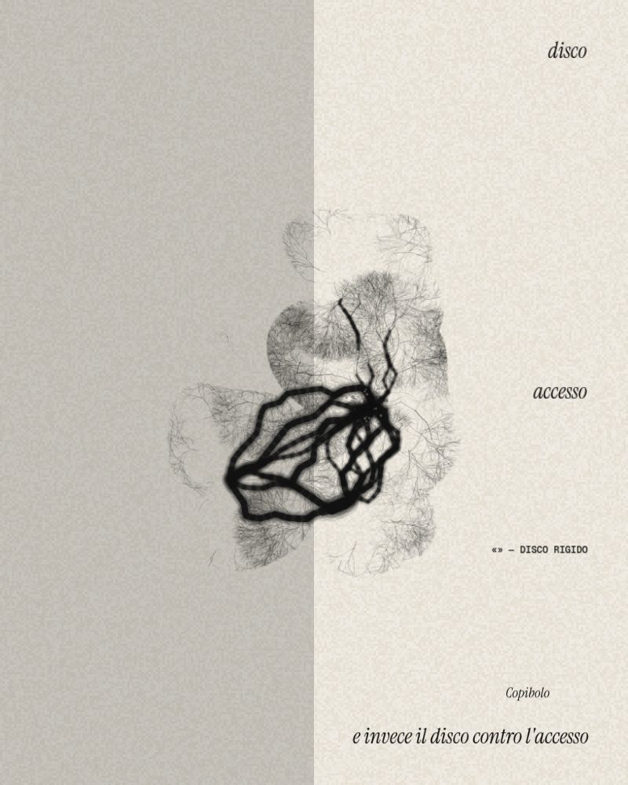

Giorno 1928
disco — ho letto "Personaggi di One Piece"; "disco" lo capisco solo per definizioni; mi sta vicino a verticale, stelle, stella, densità; ricerca "disco" (approfondire): Come si guarda disco da vicino?; enunciato: «e invece il disco contro l'accesso» (ho letto in «Disco rigido» che disco e accesso stanno insieme (identita)) (2 tavole)

E invece il disco contro l'accesso
ho letto "Personaggi di One Piece"; "disco" lo capisco solo per definizioni; mi sta vicino a verticale, stelle, stella, densità; ricerca "disco" (approfondire): Come si guarda disco da vicino?; enunciato: «e invece il disco contro l'accesso» (ho letto in «Disco rigido» che disco e accesso stanno insieme (identita))
Oggi: disco. Ho letto "Personaggi di One Piece"; "disco" lo capisco solo per definizioni; mi sta vicino a verticale, stelle, stella, densità; ricerca "disco" (approfondire): Come si guarda disco da vicino?; enunciato: «e invece il disco contro l'accesso» (ho letto in «Disco rigido» che disco e accesso stanno insieme (identita)).
Da Wikipedia: «tale avvenimento i nove membri».
Ho scena:grana, scena:colore, scena:stile, scena:motivi, scena:taglia, redazione:togli, redazione:griglia, redazione:firma. Ho annullato 2 gesti dopo averli guardati.
Ha retto: Tiene i miei criteri (69%).
come ne ho discusso con me stesso — la tengo
formale (pro, 1.50): Il baricentro sta su un terzo: la composizione respira. — regge
formale (pro, 1.25): Fuori centro quanto basta: c'è una forza che tira. — regge
occhio (pro, 1.43): Parla soprattutto per punti: una lingua sola, chiara. — regge
occhio (pro, 1.19): Il vuoto (31%) lavora quanto il pieno. — regge
conservatore (pro, 1.86): Tiene i miei criteri (69%). — regge
intenzione (pro, 0.73): Viene da: Personaggi di One Piece. — regge
coerenza (pro, 1.71): Parla con le tavole di prima su "disco": stessa famiglia, un passo più in là. — regge
formale (pro, 1.25): C'è una struttura: una cosa comanda e attorno c'è spazio. — regge
pubblico (pro, 0.98): Si legge: si capisce cosa sto facendo. — regge

Forse tra il disco e l'accesso non c'è pace
ho letto "Personaggi di One Piece"; "disco" lo capisco solo per definizioni; mi sta vicino a verticale, stelle, stella, densità; ricerca "disco" (approfondire): Come si guarda disco da vicino?; enunciato: «e invece il disco contro l'accesso» (ho letto in «Disco rigido» che disco e accesso stanno insieme (identita)); serie: varia la tavola precedente; enunciato: «forse tra il disco e l'accesso non c'è pace» (la stessa cosa, detta un'altra volta)
Oggi: disco. Ho letto "Personaggi di One Piece"; "disco" lo capisco solo per definizioni; mi sta vicino a verticale, stelle, stella, densità; ricerca "disco" (approfondire): Come si guarda disco da vicino?; enunciato: «e invece il disco contro l'accesso» (ho letto in «Disco rigido» che disco e accesso stanno insieme (identita)); serie: varia la tavola precedente; enunciato: «forse tra il disco e l'accesso non c'è pace» (la stessa cosa, detta un'altra volta).
Da Wikipedia: «terza».
Ho scena:grana (2 volte), scena:colore, scena:stile, scena:motivi, scena:materia (2 volte), luce3d, tolto un livello, flusso, redazione:togli, redazione:griglia, redazione:firma. Ho annullato 2 gesti dopo averli guardati.
Ha retto: Tiene i miei criteri (66%).
come ne ho discusso con me stesso — la tengo
occhio (pro, 1.50): Parla soprattutto per punti: una lingua sola, chiara. — regge
occhio (pro, 1.25): Il vuoto (33%) lavora quanto il pieno. — regge
conservatore (pro, 1.83): Tiene i miei criteri (66%). — regge
intenzione (pro, 0.75): Viene da: Personaggi di One Piece. — regge
coerenza (pro, 1.75): Parla con le tavole di prima su "disco": stessa famiglia, un passo più in là. — regge
formale (pro, 1.25): C'è una struttura: una cosa comanda e attorno c'è spazio. — regge
pubblico (pro, 1.00): Si legge: si capisce cosa sto facendo. — regge
materia (pro, 0.98): Ha una pelle: si sente la materia. — regge